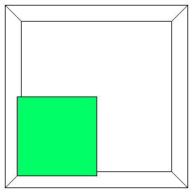
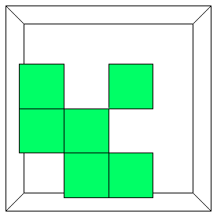
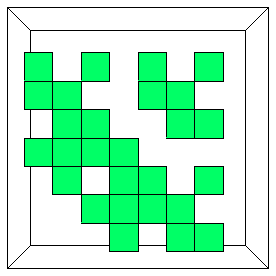
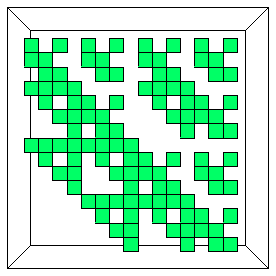
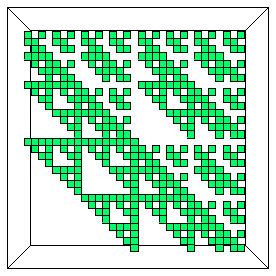
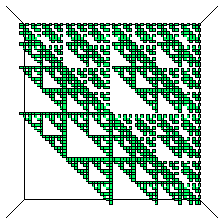

Here we show the same data (with two more iterates), but just the tops of the boxes of the second-highest region in the previous construction.
|  |  |
|  |  |
|  |  |
Animating these pictures emphasizes the complication in computing the dimension. Successive generations dissolve in previously occupied regions and also grow into previously unoccupied regions.
| Click the picture to animate. |
| Computing the dimension of the second-highest section requires some work, because at each iteration sections of some squares are removed, and sections of previously empty squares are filled. |
Return to Multifractals.